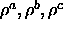

ARTMAP_Stable updates all units until a stable state is reached. The state is considered stable if the classified or unclassified unit is 'on'. All neurons compute their output and activation in one propagation step. The propagation step continues until the stable state is reached. The required parameters are

in field1, field2, field3 respectively.